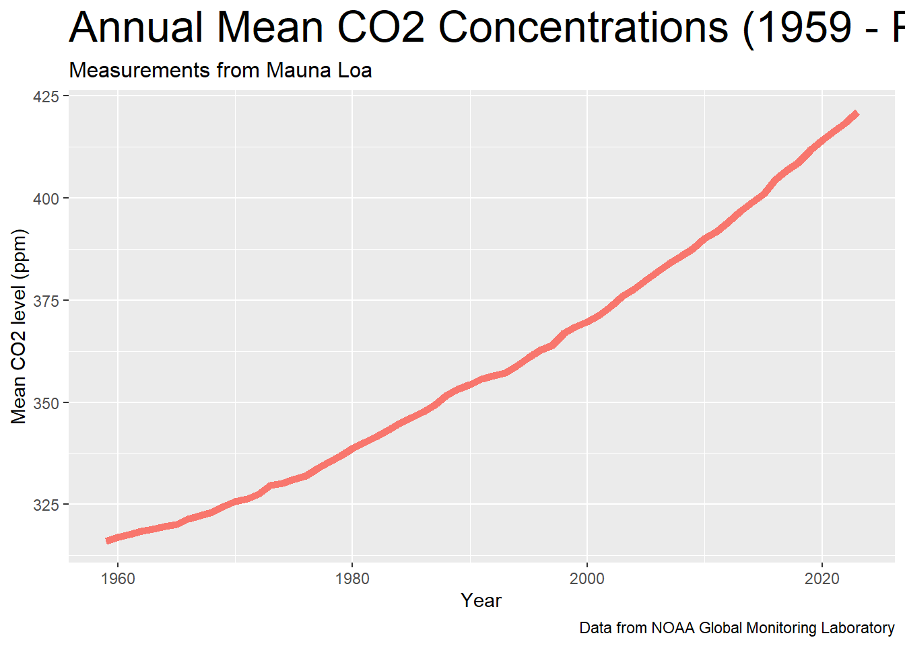

Mauna Loa Annual Carbon Dioxide Concentration (1959 - Present)
Author
Stephen Sanders
Published
October 27, 2024
Get annual mean CO2 concentration data measured at Mauna Loa from NOAA website
# set url to annual co2 concentration data, then request itannual_data_url <-'https://gml.noaa.gov/webdata/ccgg/trends/co2/co2_annmean_mlo.txt'httr::GET(annual_data_url)
Response [https://gml.noaa.gov/webdata/ccgg/trends/co2/co2_annmean_mlo.txt]
Date: 2024-10-27 05:11
Status: 200
Content-Type: text/plain; charset=UTF-8
Size: 3.65 kB
# --------------------------------------------------------------------
# USE OF NOAA GML DATA
#
# These data are made freely available to the public and the scientific
# community in the belief that their wide dissemination will lead to
# greater understanding and new scientific insights. To ensure that GML
# receives fair credit for their work please include relevant citation
# text in publications. We encourage users to contact the data providers,
# who can provide detailed information about the measurements and
# scientific insight. In cases where the data are central to a
...
# read in data to co2_annual then rename columnsco2_annual <-read.table(annual_data_url, skip =45, header =FALSE)co2_annual <- co2_annual %>%rename(year = V1, mean = V2, unc = V3)# preview co2_annualknitr::kable(head(co2_annual))
year
mean
unc
1959
315.98
0.12
1960
316.91
0.12
1961
317.64
0.12
1962
318.45
0.12
1963
318.99
0.12
1964
319.62
0.12
Plot annual mean CO2 concentrations between 1959 and present
# plot time series line graph of mean co2 concentration by yearannual_co2_plt <-ggplot(co2_annual, aes(x = year, y = mean, color ='darkred')) +geom_line(linewidth =2) +xlab('Year') +ylab('Mean CO2 level (ppm)') +labs(title ='Annual Mean CO2 Concentrations (1959 - Present)',subtitle ='Measurements from Mauna Loa',caption ='Data from NOAA Global Monitoring Laboratory') +theme(plot.title =element_text(size =unit(24, 'pt')),plot.subtitle =element_text(size =unit(12, 'pt')),legend.position ='none' )annual_co2_plt

Create table of mean CO2 concentrations by decade
# create table of mean co2 concentration by decadeco2_table <- co2_annual %>%mutate(decade = year - year %%10) %>%group_by(decade) %>%summarize(decade_mean =mean(mean)) %>%rename(mean = decade_mean) %>%gt() %>%tab_header(title =md('**Mean CO2 Levels by Decade**'),subtitle ='Measurements from Mauna Loa') %>%cols_width(everything() ~px(150)) %>%cols_align(align ='center', columns =everything()) %>%cols_label(decade =md('**Decade**'),mean =md('**Mean CO2 (ppm)**') ) %>%fmt_number(columns = mean, decimals =2)co2_table